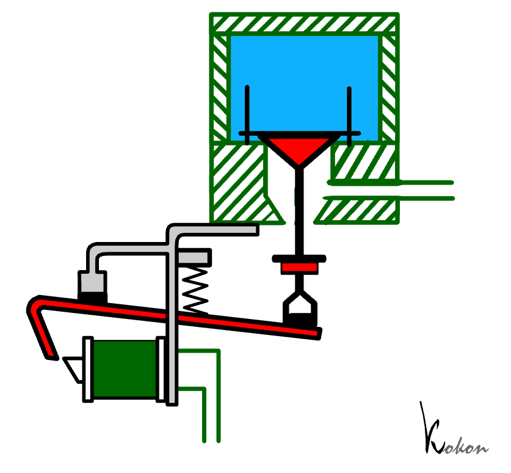
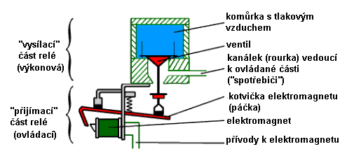
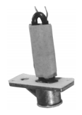
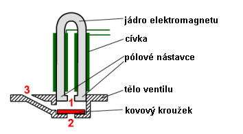
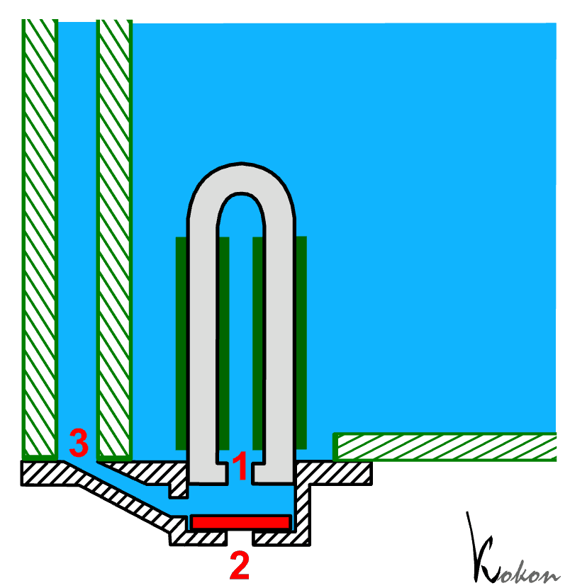
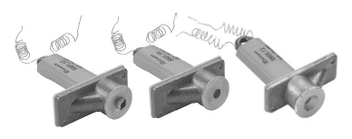
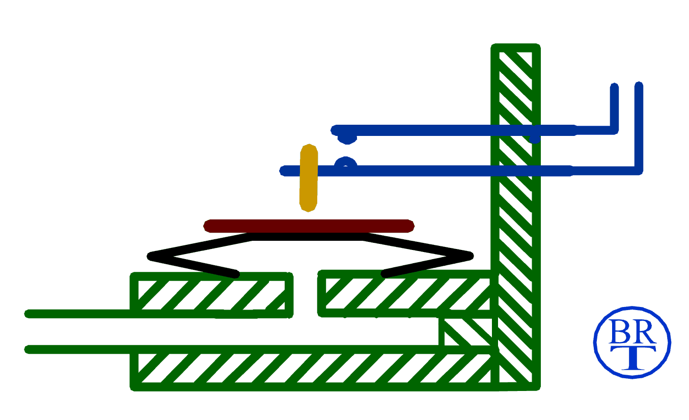
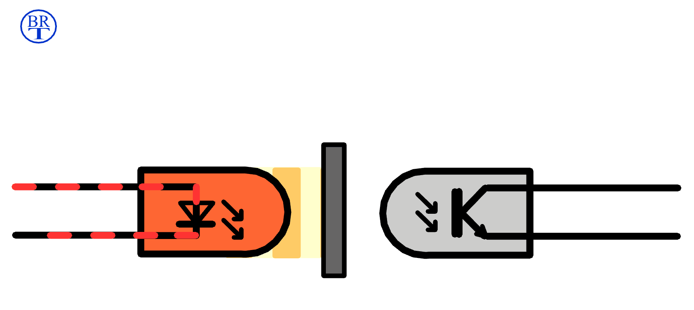

1. Elektropneumatická trakturaElektropneumatická traktura pracuje, jak už název napovídá, na kombinovaném
principu s využitím dvou druhů impulsů – elektrických a pneumatických.
V traktuře jsou tak použity jak elektromagnetické, tak i pneumatické
komponenty, jejichž popis je na samostatných stránkách komponenty
pneumatické traktury a komponenty elektrické traktury. Základním prvkem, zabezpečujícím právě takovou přeměnu je elektropneumatické relé. Pneumatické relé, využívané např. ve vzdušnici, již jistě znáte jako element pneumatické traktury. Čím se liší od elektropneumatického relé? |
|  | Jak je patrné z obrázku, zamění se pouze dolní „přijímací“ část relé,
horní – výkonová (pneumatická) část zůstane v obou případech identická.
Míšek, naplňovaný tlakovým vzduchem je nahrazen elektrickým prvkem –
elektromagnetem. Jeho funkce je analogická s funkcí míšku, přijímá impuls
(tentokráte elektrický) od nadřazeného řídicího členu (např. spínače
v hracím stole) a v jeho důsledku nadzvedává kuželku ventilu v relé.
Celek tak slouží k přeměně nosného média impulsu – elektrický proud
v přívodech se zde mění na proud vzduchu v rource. |
| Konstrukci elektropneumatického relé přibližuje následující obrázek: |

Druhým charakteristickým prvkem elektropneumatické
traktury je elektromagnetický ventil. Jedná se o zařízení, sestrojené
na základě elektromagnetu s jádrem ve tvaru obráceného písmene U a vlastního
ventilu, tvořeného kovovým diskem pohybujícím se ve speciálním pouzdře.
Právě pohyb tohoto disku, ovládaný elektromagnetem, řídí tok vzduchu kanálky
v pouzdře. |
|  | Na obrázku je fotografie takového elektromagnetického ventilu. Dobře
je viditelný elektromagnet (jeho cívky na U jádře) a pouzdro ventilu,
disk je uzavřen uvnitř pouzdra ve spodní části ventilu. Následující ilustrace ukazuje řez tímto ventilem. Na jádru elektromagnetu
jsou navinuty dvě cívky, ke kterým se přivádí elektrické impulsy. Konce
jádra tvoří pólové nástavce, přiléhající do destičky s otvorem (1).
|

Elektromagnet je upevněn v kovovém pouzdře s kanálky,
uvnitř kterého je volně pohyblivý disk z feromagnetického materiálu (měkká
ocel). V klidovém stavu (cívkami neprochází el. proud) spočívá kroužek
(na obrázku v červené barvě) vlastní vahou na dně pouzdra. Přikrývá tak
výstupní otvor pouzdra (2), zbývající otvory (1 a 3) jsou otevřené. Průtok
el. proudu vinutím cívek způsobí přitažení disku k pólovým nástavcům,
čímž se uzavře otvor (1) a otevřou otvory (2 a 3). |
Práci tohoto zařízení nejlépe
ilustruje animace napravo, je na ní elektromagnetický ventil řídící tok
vzduchu v kanálech uvnitř vzdušnice. Elektromagnet ventilu se nachází
uvnitř větší komory, naplněné stlačeným vzduchem. Vzduch z této komory
se díky ventilu může dostat do svislého kanálku v levé části obrázku.
Aby k tomu mohlo dojít, musí se elektromagnet dostat do klidového stavu
(el. proud do cívek musí být vypnut). V tom okamžiku spadne kovový disk
na dno pouzdra a vzduch může proudit otevřenými otvory (1) mezi póly elektromagnetu
a (3) na boku pouzdra. Současně disk uzavírá výfukový otvor (2) a zabraňuje
tak úniku vzduchu do okolí. |
 |
V aktivním stavu (proud do cívek zapnut) je kroužek
přitažen k pólům elektromagnetu (do horní polohy) a uzavře přívod vzduchu
otvorem (1) mezi póly. Současně se odkryje spodní výfukový otvor (2),
tvořící k hornímu otvoru kontraventil a přes něj vzduch ze svislého kanálku
(3) volně unikne do okolí. |

2. Pneumaticko-elektrická trakturaV případě, že kombinovanou trakturu použijeme k rozšíření nástroje (např. o další rejstříky, kdy se ke stávajícímu stroji připojí další vzdušnice, mnohdy i typu Unit), potřebujeme získat elektrické imlulsy ze stávajících pneumatických. |
|  |
Sepnutí kontaktu lze odvodit např. od spodní, pneumatické
části relé. Pohyb horní desky míšku neovládá ventil, ale přes pohyblivý
palec spíná pérový kontakt (čímž vznikne pneumaticko – elektrické relé,
výkonovou část tvoří el. obvod). |
Dnes je častější použití bezkontaktního optoelektronického
spínání – (viz komponenty
el. traktury) - k některé stávající pohyblivé části traktury (pneumatické,
ale v tomto případě i mechanické) se připevní malá lehká clonka, zasahující
do dráhy světelného paprsku v optozávoře (běžnější jsou dnes prvky, pracující
v infračerveném – neviditelném spektru). |
|
Pohyb prvku svázaného s clonkou způsobí přerušení paprsku
a sepnutí či rozepnutí tranzistoru (nebo kontaktního relé) na výstupu
optozávory. Celek se tedy chová jako pneumaticko (či mechanicko) elektrické
relé. Výhodou je minimální zásah do stávajícího mechanismu traktury a
nulové silové ovlivnění prvku, použitého pro řízení (clonka trakturu nijak
mechanicky nezatěžuje). |

|
Na dalších stránkách je popsáno použití těchto komponentů v tónové a rejstříkové traktuře. |
Poznámka: Tato stránka je součástí Anatomie varhan ®, © Ing. Petr Bernat. Všechny animace © Konrad Zacharski